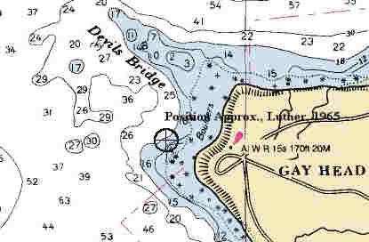

Description:
Freighter; Iron
Dimensions: length
- 274 ft. 4 in. width - 41 ft. depth - 31
ft. 31/2in.
Tonnage: gross
- 2638, other
-
Propulsion: Steam,
propeller
Machinery: 2500 Indicated
Horsepower, 3 cylinder triple expansion engine with cylinder diameters 23 inches, 39
inches, 66 inches and a stroke of 42 inches; 2, coal fired, Babcock and Wilcox Co., Water
Tube Boilers; Solid Bronze Propeller
Cargo:
The Shipwreck
Date Sunk: March 7, 1944.
Cause: Stranded.
Location: Martha's
Vineyard, under the cliffs of Gay Head.
Coordinates: Latitude, 41o - 20.9' N. Longitude, 70o
- 50.5' W.
Loran:
So often is the case with World War II
shipwrecks, news of Herman Winter's demise was withheld from the general populace
so as not to cause panic should the loss be attributed to enemy action.
Back to Top
Dive Site Conditions
Depth in feet: maximum - minimum -
Visibility in feet:
average -
The broken remains of the Herman
Winter can be found scattered over the rocky bottom directly in front of the Red Clay
cliffs of Gay Head. To find the wreck form a right angle between the cliffs and the buoy
marking the Devils Bridge, the reef where the steamer City of Columbus wrecked in
1884 with a great loss of life. According to author Brad Luther the steamer's remains lie
at the intersection of the two lines.
Click on the image to go to the MapTech Map Server,
for additional navigation information. 
Back to Top
Historical Background
Constructed: year
- 1886; where - Philadelphia,
Pennsylvania.
builder - Wm.
Cramp & Sons S.& E.B.Co.
Construction details: built of Iron and Steel; 3 decks; Transverse Framing; 4 Watertight
Bulkheads to the Freeboard Deck; 4 Hatches measuring 16'X20'; 2 Holds measuring 92 ft.;
fuel capacity, 482 tons of Coal.
Crew: ; Master:
Owners: War
Shipping Administration, Washington D.C.; Operator - Dichmann, Wright & Pugh, Inc..
Home or Hailing Port: New York, N.Y..
Former Name(s) and date(s): .
Official number: 95903.Country: U.S.A..
Other Comments: :
Wm. Cramp & Sons Hull Number 252; Babcock & Wilcox Co. boilers built in 1925
Back to Top
Salvage
Back to Top
Sources:
Encyclopedia of American Shipwrecks; Berman, 1972
MapTech
Mapserver
Merchant Vessels of the United States, Vessels Lost Chapter; 1945
New England Shipwrecks; Luther, 1967
The Record, "American Lloyds", American Bureau of Shipping; 1944
Back to Top
These files are under construction. Any
information, specifically dive site related, would be greatfully appreciated.
Send comments to: Chris Hugo
Copyright © 2000 by Christopher C. Hugo
Massachusetts Board of Underwater Archaeological Resources
All Rights Reserved
|